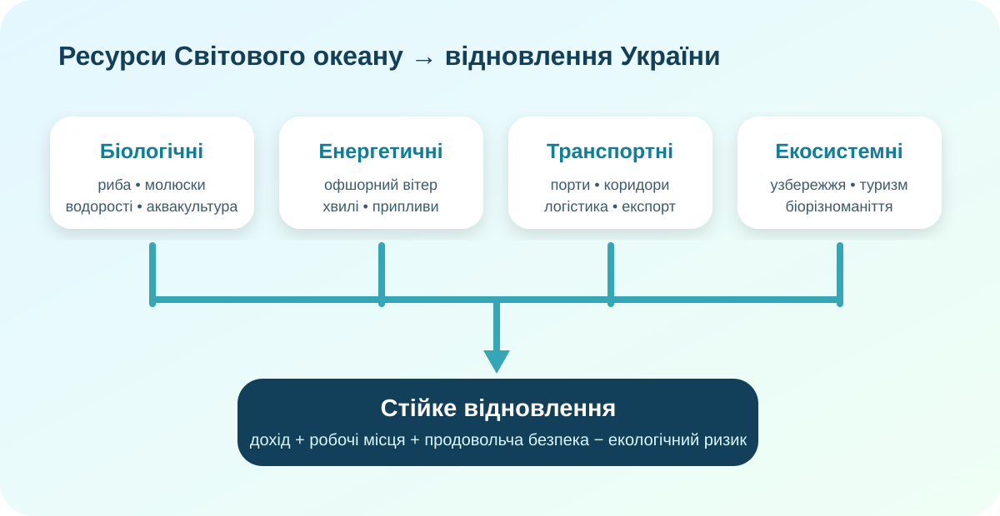

Що з моря відновлює країну найкраще?
Уявіть: є 1 млрд умовних гривень на один морський напрям. Куди Ви вкладете їх першими?

Чорне море з орбіти. NASA / Wikimedia Commons, public domain.
Спочатку географія: де саме працює «морський ресурс»?
OpenStreetMap. Знайдіть Одесу, Чорноморськ, гирло Дунаю, Крим, Керченську протоку, узбережжя Туреччини.
Завдання «4 функції моря»
Для кожної функції назвіть просторову умову, без якої вона не працюватиме:
- портова логістика;
- промисловий вилов;
- офшорна вітроенергетика;
- туризм і рекреація.
КТП-дослідження: що насправді ловлять українські компанії?
загальний вилов водних біоресурсів підприємствами України у 2025 році.
Джерело: Держрибагентство, 19.02.2026.
добуто у водах за межами юрисдикції України; найбільша частина — антарктичний криль.
Висновок-пастка: українське морське рибальство ≠ лише Чорне та Азовське моря.
промисловий вилов у водоймах України у 2025 році; право на спеціальне використання отримали 126 суб’єктів.
Не поспішайте з висновком
У Чорному морі діють сезонні заборони для відновлення популяцій. Наприклад, у 2026 році вилов глоси забороняли з 15 лютого до 30 квітня. Отже, більший вилов сьогодні може означати менший ресурс завтра.
Який морський проєкт має найкращий баланс?

Оцініть умовний проєкт. Ваги навмисно прості: урок тренує логіку рішення, а не інвестиційний аудит.
Індекс = економічний ефект + робочі місця − екологічний ризик − воєнно-логістичний ризик. Потім поясніть, чого в цій формулі бракує.
Доказ 1: морські коридори
Станом на 7 лютого 2025 року Українським морським коридором за 18 місяців перевезли 100 млн т вантажів, із них 65 млн т агропродукції.
Доказ 2: море — ще й екосистема
У 2025 році Україна на Конференції ООН з питань океану порушувала питання воєнної шкоди Чорному морю та потреби міжнародної співпраці для його захисту.
Перевіряємо модель ще одним джерелом
Дивимось не пасивно
Під час фрагмента запишіть по одному прикладу для трьох груп ресурсів:
- біологічні;
- енергетичні;
- транспортні.
Після перегляду: який ресурс у відео виглядає перспективним, але потребує найбільше додаткових умов?
Тепер складаємо систему
Біологічні ресурси
Риба, молюски, ракоподібні, водорості та інші організми. Їхня цінність залежить не тільки від запасів, а й від відтворення популяцій, лімітів, стану вод, безпеки промислу, холодового ланцюга та переробки.
Мінеральні та енергетичні ресурси
Шельф може містити вуглеводні й мінеральну сировину; море має потенціал вітрової, хвильової та припливної енергії. Але «потенціал» не дорівнює готовому проєкту: потрібні мережі, інвестиції, екологічна оцінка та безпека.
Транспортні ресурси
Морські шляхи й порти знижують вартість перевезення великих мас вантажів. Для України це критично для експорту, імпорту, відбудови портової інфраструктури та включення у світові ринки.
Екосистемні й рекреаційні ресурси
Чисте узбережжя, біорізноманіття, ландшафти, природні території та здатність екосистем підтримувати рибні запаси — теж ресурси. Якщо їх знищити заради короткого прибутку, відновлення стає дорожчим.
Висновок, який треба довести
C — Claim
Оберіть один морський напрям, який має бути пріоритетним для відновлення України.
E — Evidence
Наведіть щонайменше 2 конкретні докази з карти, статистики або кейсів уроку.
R — Reasoning
Поясніть причинний зв’язок і назвіть один ризик Вашого рішення.
§52 + коротке продовження дослідження
1. Прочитайте в електронному підручнику тему про ресурси Світового океану. 2. Оберіть один ресурс і складіть міні-картку: ресурс → де в Україні/для України → економічна користь → екологічний ризик → одна умова сталого використання. 3. Рівень «+»: знайдіть одну актуальну цифру з надійного джерела та додайте посилання.